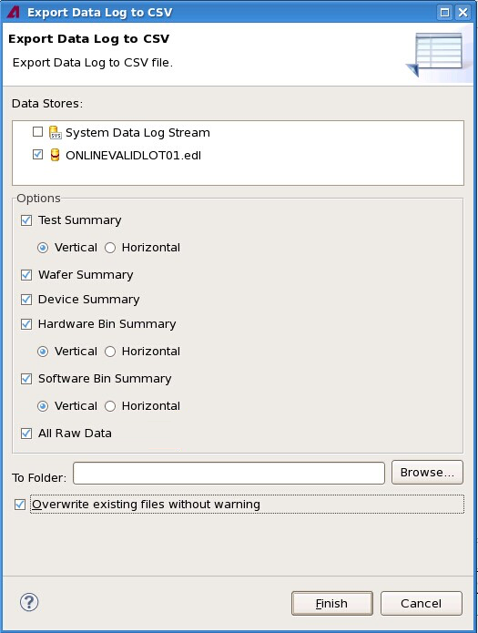
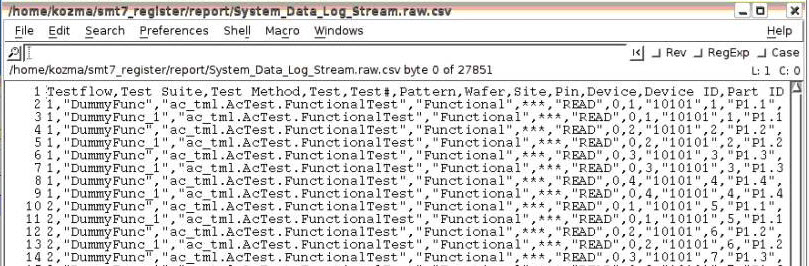

Exporting data logs
Data logs can be exported as CSV files from the Data Log Explorer view, with export options being set in the Export Data Log to CSV dialog.
About this task
Export data logs when you want to analyze them with an external tool that can work on CSV files or otherwise use them outside of SmarTest.
Before you begin
Make sure the data log files you want to export are loaded into the Data Log Explorer and SmarTest is running.
Procedures
From the SmarTest Work Center
- In the view displaying the data log in the data navigation part
of the Result perspective, group the data if desired.
If you group the data by wafer, site, or pin, the exported log data will include summary evaluations for each group. This provides a more detailed overview but also increases the file size.
- In the Data Log Explorer view, right-click the data log file or stream for which you want to
export summaries and choose Export from the shortcut menu.
The Export Data Log to CSV dialog opens:

You can also open this dialog by choosing and then specifying as the destination.
- In the dialog's Data Stores list, check all logs for which you want to export summaries.
- In the Options section, specify the desired summaries to export.
Each of the checkboxes corresponds to one of the tabs of the data log's view in the data navigation part of the Result perspective. If the check box is checked, the contents of the corresponding tab is exported (into its own file).
The Vertical and Horizontal settings have an effect only when you are exporting correlation data stores:
- Vertical causes the results of the same test from different data stores to be exported in adjacent rows.
- Horizontal causes the results of the same test from different data
stores to be exported in adjacent columns.
In addition to the data in the various tabs, you can also choose to export the raw data for the data log by checking the All Raw Data option.
- Enter the desired output directory into the To Folder field.
You can type the name into the field or use the Browse button to select a folder.
- If you want SmarTest to silently overwrite any existing file with the same name, check
Overwrite existing files without warning.
If you uncheck this option, SmarTest will ask you every time there is a filename conflict.
- Click Finish.
From the terminal
(For exporting data logs from the terminal, it is not necessary that they are loaded into the Data Log Explorer.)
- Open a terminal.
- Enter the CsvExport export command with the desired options and press
Enter.
See CSV Export command line tool for details.
Results
Exporting from SmarTest
SmarTest exports the specified tables to the
chosen directory. The files are named
<log-name>.<table-type>.csv,
where <log-name> is the filename of the data log you export and
<table-type> indicates the exported table:
- tsum: test summary
- wsum: wafer summary
- dsum: device summary
- hbin: hardware bin summary
- sbin: hardware bin summary
When you have set wafer, site, or pin grouping in a test summary tab, the exported CSV file for the test summary contains one column per group for the Min, Max, Mean, Sdev, Cpk, Count (#), Pass# (P#), Pass% (P%), Fail# (F#), Fail% (F%), Time (T$), and Test Suite Time (TS$) columns.
Exporting from the terminal
SmarTest writes the specified summary to disk with the specified name. The contents of the file is the same as when you export from SmarTest; see above for details.
Example
If you export CSV file from the data log mylog.stdf and specify in the Export Data Log to CSV dialog that you want to export the test summary and the hardware bin summary, two files are created:
- mylog.stdf.hbin.csv
- mylog.stdf.tsum.csv
The following screen shot shows an example of correctly exported raw data (when the All Raw Data option is selected before exporting data log).

What to do next
Open the exported files with the external tools you want to use.
Functional changes
- Introduced in SmarTest 7.2.0
- SmarTest 7.3.2: Added raw data export option.